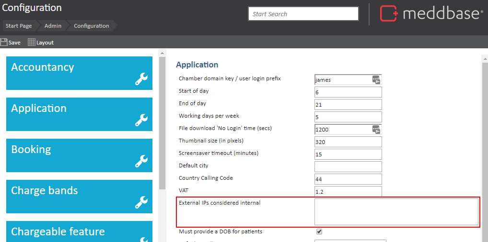

By specifying a list of IP addresses or ranges, only users logging in from those locations will be able to access the system, reducing the risk of unauthorised access from unknown or untrusted networks.
This guide outlines how to add the desired IP address or addresses to the system's configuration, allowing users to log in only from those specified locations.
If you want to restrict your users to logging in from a specific IP address/range of IP addresses, you will need to add them to your list of external IPs to be considered internal. To do this, go to Admin > Configuration.
You will see a section on the right side of the page called External IPs considered internal:

Enter your IP address/addresses into this box. If you would like to add more than one address, simply add the IP addresses as a comma-separated list. For example:
83.217.106.161,217.150.99.2
Click the 'Save' button at the top of the page to save your changes.